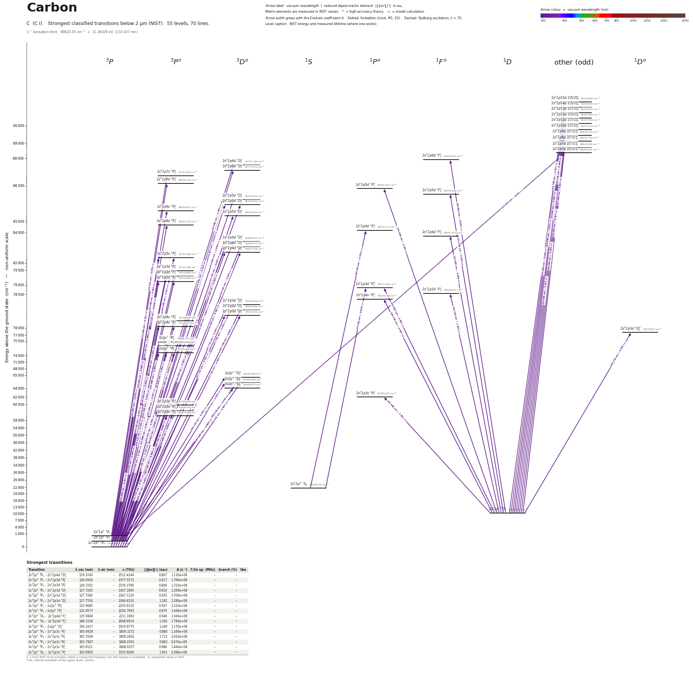

Carbon energy level diagram
Energy levels and transitions of neutral carbon (C I): the 80 strongest classified lines below 2 µm from the NIST Atomic Spectra Database and the 59 levels they connect, each line with its vacuum wavelength, frequency and, for 70 of them, the reduced dipole matrix element derived from the NIST transition rate. Measured lifetimes, transition rates, hyperfine constants and isotope shifts from the literature are included, each with its citation.
Hover a line or a level to isolate it, click to keep it selected. Scroll to zoom, drag to move.

Download: diagram (PDF) diagram (SVG) transitions (CSV) levels (CSV) source code

Key transitions of carbon
| Transition | λ vac (nm) | λ air (nm) | ν (THz) | |⟨J‖er‖J′⟩| (ea₀) | A (s⁻¹) | Γ/2π up. (MHz) | branch (%) | Use |
|---|---|---|---|---|---|---|---|---|
| 2s22p2 3P2 – 2s22p3p 3D3 | 143.4707 | – | 2089.5726 | – | – | – | – | two-photon excitation of ground-state carbon atoms at 2 x… |
| 2s22p2 3P1 – 2s22p3s 3P°2 | 165.6267 | – | 1810.0495 | 0.988 | 8.700e+07 | 54.88 | 25.2 | 165.7 nm resonance multiplet 2p2 3P - 2p3s 3P: measured f… |
| 2s22p2 3P0 – 2s22p3s 3P°1 | 165.6928 | – | 1809.3272 | 0.884 | 1.160e+08 | 54.88 | 33.6 | 165.7 nm resonance multiplet 2p2 3P - 2p3s 3P: measured f… |
| 2s22p2 3P2 – 2s22p3s 3P°2 | 165.7008 | – | 1809.2402 | 1.712 | 2.610e+08 | 54.88 | 75.7 | 165.7 nm resonance multiplet 2p2 3P - 2p3s 3P: measured f… |
| 2s22p2 3P1 – 2s22p3s 3P°1 | 165.7379 | – | 1808.8350 | 0.766 | 8.700e+07 | 54.88 | 25.2 | 165.7 nm resonance multiplet 2p2 3P - 2p3s 3P: measured f… |
| 2s22p2 3P1 – 2s22p3s 3P°0 | 165.7907 | – | 1808.2591 | 0.883 | 3.470e+08 | 54.88 | 100 | 165.7 nm resonance multiplet 2p2 3P - 2p3s 3P: measured f… |
| 2s22p2 3P2 – 2s22p3s 3P°1 | 165.8121 | – | 1808.0257 | 0.986 | 1.440e+08 | 54.88 | 41.8 | 165.7 nm resonance multiplet 2p2 3P - 2p3s 3P: measured f… |
| 2s22p2 1D2 – 2s22p3s 1P°1 | 193.0905 | – | 1552.6004 | 1.901 | 3.390e+08 | 58.95 | 91.5 | 193.09 nm line: carbon line used in white-dwarf and comet… |
| 2s22p2 1S0 – 2s22p3s 1P°1 | 247.9310 | 247.8561 | 1209.1770 | – | – | 58.95 | – | 2478.56 A |
λ, ν from NIST level energies unless a measured frequency for this isotope is available. A: measured value or NIST. Γ/2π: natural linewidth of the upper level, 1/(2πτ).
13C hyperfine structure (I = 1/2)
| Level | A (MHz) | B (MHz) | Shift of each F level from the centre of gravity (MHz) |
|---|---|---|---|
| 2s22p2 3P1 | 2.838(17) | – | F=1/2: -2.84 F=3/2: +1.42 |
| 2s22p2 3P2 | 149.055(10) | – | F=3/2: -223.58 F=5/2: +149.06 |
Measured A, B constants; sources in the data file.
Isotope shifts
| Transition | λ vac (nm) | Isotopes | Shift (MHz) |
|---|---|---|---|
| 2s22p2 3P1 – 2s22p3s 3P°2 | 165.627 | 13-12 | -3028(1049) |
| 2s22p2 3P0 – 2s22p3s 3P°1 | 165.693 | 13-12 | -3418(1049) |
| 2s22p2 3P2 – 2s22p3s 3P°2 | 165.701 | 13-12 | -2908(1049) |
| 2s22p2 3P1 – 2s22p3s 3P°1 | 165.738 | 13-12 | -2578(1049) |
| 2s22p2 3P1 – 2s22p3s 3P°0 | 165.791 | 13-12 | -3058(1049) |
| 2s22p2 3P2 – 2s22p3s 3P°1 | 165.812 | 13-12 | -3118(1049) |
| 2s22p2 1S0 – 2s22p3s 1P°1 | 247.931 | 13-12 | -4677(60) |
| 2s22p2 1S0 – 2s22p3s 1P°1 | 247.931 | 14-12 | -8814(60) |
Shift = ν(first isotope) − ν(second isotope).
Listed C transitions below 2 µm
| Lower level | Upper level | λ vacuum (nm) | λ air (nm) | ν (THz) | Type | |⟨J‖er‖J′⟩| (ea₀) | A (s⁻¹) | Branching (%) | Source of matrix element / A |
|---|---|---|---|---|---|---|---|---|---|
| 2s22p2 3P2 | 2s22p7d 2[5/2]°3 | 112.9141 | – | 2655.0491 | E1 | 0.291 NIST | 1.700e+07 NIST | – | NIST ASD (accuracy B) |
| 2s22p2 3P1 | 2s22p6d 3D°2 | 113.9514 | – | 2630.8796 | E1 | 0.314 NIST | 2.700e+07 NIST | – | NIST ASD (accuracy B) |
| 2s22p2 3P2 | 2s22p6d 3D°3 | 113.9812 | – | 2630.1921 | E1 | 0.392 NIST | 3.000e+07 NIST | – | NIST ASD (accuracy B) |
| 2s22p2 3P2 | 2s22p7s 3P°2 | 114.0116 | – | 2629.4901 | E1 | 0.259 NIST | 1.840e+07 NIST | – | NIST ASD (accuracy B) |
| 2s22p2 3P2 | 2s22p5d 3P°2 | 115.6560 | – | 2592.1045 | E1 | 0.321 NIST | 2.700e+07 NIST | – | NIST ASD (accuracy B) |
| 2s22p2 3P1 | 2s22p5d 3D°2 | 115.7769 | – | 2589.3976 | E1 | 0.317 NIST | 2.620e+07 NIST | – | NIST ASD (accuracy B+) |
| 2s22p2 3P0 | 2s22p5d 3D°1 | 115.7909 | – | 2589.0838 | E1 | 0.284 NIST | 3.520e+07 NIST | – | NIST ASD (accuracy B+) |
| 2s22p2 3P2 | 2s22p5d 3D°3 | 115.8018 | – | 2588.8403 | E1 | 0.548 NIST | 5.600e+07 NIST | – | NIST ASD (accuracy B+) |
| 2s22p2 3P1 | 2s22p6s 3P°2 | 115.8035 | – | 2588.8040 | E1 | 0.345 NIST | 3.100e+07 NIST | – | NIST ASD (accuracy B) |
| 2s22p2 3P2 | 2s22p5d 3D°2 | 115.8131 | – | 2588.5883 | E1 | 0.315 NIST | 2.580e+07 NIST | – | NIST ASD (accuracy B+) |
| 2s22p2 3P2 | 2s22p4d 3P°2 | 118.9631 | – | 2520.0467 | E1 | 0.469 NIST | 5.300e+07 NIST | – | NIST ASD (accuracy B) |
| 2s22p2 3P1 | 2s22p4d 3D°2 | 119.3009 | – | 2512.9100 | E1 | 0.575 NIST | 7.900e+07 NIST | – | NIST ASD (accuracy B+) |
| 2s22p2 3P0 | 2s22p4d 3D°1 | 119.3030 | – | 2512.8651 | E1 | 0.401 NIST | 6.400e+07 NIST | – | NIST ASD (accuracy B+) |
| 2s22p2 3P2 | 2s22p4d 3D°3 | 119.3240 | – | 2512.4244 | E1 | 0.807 NIST | 1.110e+08 NIST | – | NIST ASD (accuracy B+) |
| 2s22p2 3P1 | 2s22p4d 3D°1 | 119.3264 | – | 2512.3729 | E1 | 0.329 NIST | 4.300e+07 NIST | – | NIST ASD (accuracy B+) |
| 2s22p2 3P2 | 2s22p4d 3D°2 | 119.3393 | – | 2512.1007 | E1 | 0.381 NIST | 3.460e+07 NIST | – | NIST ASD (accuracy B+) |
| 2s22p2 3P1 | 2s22p5s 3P°2 | 119.3678 | – | 2511.5015 | E1 | 0.327 NIST | 2.540e+07 NIST | – | NIST ASD (accuracy A) |
| 2s22p2 3P2 | 2s22p5s 3P°2 | 119.4063 | – | 2510.6921 | E1 | 0.354 NIST | 2.980e+07 NIST | – | NIST ASD (accuracy B+) |
| 2s22p2 1D2 | 2s22p15d 2[5/2]°3 | 124.7863 | – | 2402.4475 | E1 | 0.317 NIST | 1.500e+07 NIST | – | NIST ASD (accuracy E) |
| 2s22p2 1D2 | 2s22p14d 2[5/2]°3 | 124.9002 | – | 2400.2560 | E1 | 0.296 NIST | 1.300e+07 NIST | – | NIST ASD (accuracy E) |
| 2s22p2 1D2 | 2s22p13d 2[7/2]°3 | 124.9404 | – | 2399.4841 | E1 | 0.821 NIST | 1.000e+08 NIST | – | NIST ASD (accuracy E) |
| 2s22p2 1D2 | 2s22p13d 2[5/2]°3 | 125.0423 | – | 2397.5285 | E1 | 0.581 NIST | 5.000e+07 NIST | – | NIST ASD (accuracy E) |
| 2s22p2 1D2 | 2s22p12d 2[7/2]°3 | 125.1175 | – | 2396.0865 | E1 | 0.308 NIST | 1.400e+07 NIST | – | NIST ASD (accuracy E) |
| 2s22p2 1D2 | 2s22p10d 2[7/2]°3 | 125.6495 | – | 2385.9415 | E1 | 0.321 NIST | 1.500e+07 NIST | – | NIST ASD (accuracy E) |
| 2s22p2 1D2 | 2s22p9d 2[7/2]°3 | 126.0613 | – | 2378.1484 | E1 | 0.353 NIST | 1.800e+07 NIST | – | NIST ASD (accuracy E) |
| 2s22p2 3P0 | 2s22p3d 3P°1 | 126.0735 | – | 2377.9181 | E1 | 0.404 NIST | 5.500e+07 NIST | – | NIST ASD (accuracy B) |
| 2s22p2 3P1 | 2s22p3d 3P°0 | 126.0926 | – | 2377.5572 | E1 | 0.417 NIST | 1.760e+08 NIST | – | NIST ASD (accuracy B) |
| 2s22p2 3P1 | 2s22p3d 3P°1 | 126.0996 | – | 2377.4259 | E1 | 0.370 NIST | 4.600e+07 NIST | – | NIST ASD (accuracy B) |
| 2s22p2 3P1 | 2s22p3d 3P°2 | 126.1122 | – | 2377.1878 | E1 | 0.439 NIST | 3.900e+07 NIST | – | NIST ASD (accuracy B) |
| 2s22p2 3P2 | 2s22p3d 3P°1 | 126.1425 | – | 2376.6166 | E1 | 0.466 NIST | 7.300e+07 NIST | – | NIST ASD (accuracy B) |
| 2s22p2 3P2 | 2s22p3d 3P°2 | 126.1552 | – | 2376.3785 | E1 | 0.806 NIST | 1.310e+08 NIST | – | NIST ASD (accuracy B) |
| 2s22p2 1D2 | 2s22p8d 2[7/2]°3 | 126.6415 | – | 2367.2528 | E1 | 0.327 NIST | 1.520e+07 NIST | – | NIST ASD (accuracy B) |
| 2s22p2 1D2 | 2s22p7d 2[7/2]°3 | 127.4984 | – | 2351.3431 | E1 | 0.401 NIST | 2.250e+07 NIST | – | NIST ASD (accuracy B) |
| 2s22p2 3P0 | 2s22p3d 3D°1 | 127.7245 | – | 2347.1805 | E1 | 0.624 NIST | 1.260e+08 NIST | – | NIST ASD (accuracy A) |
| 2s22p2 3P1 | 2s22p3d 3D°2 | 127.7282 | – | 2347.1120 | E1 | 0.935 NIST | 1.700e+08 NIST | – | NIST ASD (accuracy A) |
| 2s22p2 3P1 | 2s22p3d 3D°1 | 127.7513 | – | 2346.6883 | E1 | 0.533 NIST | 9.200e+07 NIST | – | NIST ASD (accuracy A) |
| 2s22p2 3P2 | 2s22p3d 3D°3 | 127.7550 | – | 2346.6210 | E1 | 1.282 NIST | 2.280e+08 NIST | – | NIST ASD (accuracy A) |
| 2s22p2 3P2 | 2s22p3d 3D°2 | 127.7723 | – | 2346.3027 | E1 | 0.570 NIST | 6.300e+07 NIST | – | NIST ASD (accuracy A) |
| 2s22p2 3P2 | 2s22p3d 3D°1 | 127.7954 | – | 2345.8790 | E1 | – | – | – | – |
| 2s22p2 3P1 | 2s22p3d 3F°2 | 127.9056 | – | 2343.8576 | E1 | – | – | – | – |
| 2s22p2 3P2 | 2s22p3d 3F°3 | 127.9228 | – | 2343.5414 | E1 | – | – | – | – |
| 2s22p2 3P2 | 2s22p3d 3F°2 | 127.9498 | – | 2343.0483 | E1 | – | – | – | – |
| 2s22p2 3P1 | 2s22p4s 3P°2 | 127.9890 | – | 2342.3292 | E1 | 0.421 NIST | 3.430e+07 NIST | – | NIST ASD (accuracy B+) |
| 2s22p2 3P0 | 2s22p4s 3P°1 | 128.0135 | – | 2341.8819 | E1 | 0.332 NIST | 3.550e+07 NIST | – | NIST ASD (accuracy B+) |
| 2s22p2 3P2 | 2s22p4s 3P°2 | 128.0333 | – | 2341.5198 | E1 | 0.576 NIST | 6.400e+07 NIST | – | NIST ASD (accuracy B+) |
| 2s22p2 3P1 | 2s22p4s 3P°0 | 128.0597 | – | 2341.0368 | E1 | – | – | – | – |
| 2s22p2 3P2 | 2s22p4s 3P°1 | 128.0847 | – | 2340.5804 | E1 | 0.335 NIST | 3.600e+07 NIST | – | NIST ASD (accuracy B+) |
| 2s22p2 1D2 | 2s22p6d 1F°3 | 128.8422 | – | 2326.8180 | E1 | 0.509 NIST | 3.500e+07 NIST | – | NIST ASD (accuracy B) |
| 2s22p2 1D2 | 2s22p5d 1P°1 | 131.0637 | – | 2287.3800 | E1 | 0.342 NIST | 3.500e+07 NIST | – | NIST ASD (accuracy E) |
| 2s22p2 1D2 | 2s22p5d 1F°3 | 131.1363 | – | 2286.1139 | E1 | 0.678 NIST | 5.900e+07 NIST | – | NIST ASD (accuracy B) |
| 2s22p2 3P0 | 2s2p3 3P°1 | 132.8833 | – | 2256.0582 | E1 | 0.504 NIST | 7.300e+07 NIST | – | NIST ASD (accuracy B) |
| 2s22p2 3P1 | 2s2p3 3P°0 | 132.9085 | – | 2255.6310 | E1 | 0.507 NIST | 2.220e+08 NIST | – | NIST ASD (accuracy B) |
| 2s22p2 3P1 | 2s2p3 3P°2 | 132.9100 | – | 2255.6048 | E1 | 0.559 NIST | 5.400e+07 NIST | – | NIST ASD (accuracy B) |
| 2s22p2 3P1 | 2s2p3 3P°1 | 132.9123 | – | 2255.5660 | E1 | 0.441 NIST | 5.600e+07 NIST | – | NIST ASD (accuracy B) |
| 2s22p2 3P2 | 2s2p3 3P°2 | 132.9577 | – | 2254.7955 | E1 | 0.975 NIST | 1.640e+08 NIST | – | NIST ASD (accuracy B) |
| 2s22p2 3P2 | 2s2p3 3P°1 | 132.9600 | – | 2254.7567 | E1 | 0.566 NIST | 9.200e+07 NIST | – | NIST ASD (accuracy B) |
| 2s22p2 1D2 | 2s22p4d 1F°3 | 135.5848 | – | 2211.1063 | E1 | 0.946 NIST | 1.040e+08 NIST | – | NIST ASD (accuracy B) |
| 2s22p2 3P2 | 2s22p3p 3D3 | 143.4707 | – | 2089.5726 | two-photon | – | – | – | – |
| 2s22p2 1D2 | 2s22p3d 1P°1 | 145.9031 | – | 2054.7367 | E1 | 0.503 NIST | 5.500e+07 NIST | – | NIST ASD (accuracy B) |
| 2s22p2 1D2 | 2s22p3d 1F°3 | 146.3336 | – | 2048.6914 | E1 | 1.392 NIST | 1.790e+08 NIST | – | NIST ASD (accuracy B+) |
| 2s22p2 1D2 | 2s22p4s 1P°1 | 146.7402 | – | 2043.0149 | E1 | 0.507 NIST | 5.490e+07 NIST | – | NIST ASD (accuracy A) |
| 2s22p2 1D2 | 2s22p3d 3D°3 | 146.7877 | – | 2042.3544 | E1 (intercombination) | – | – | – | – |
| 2s22p2 1D2 | 2s22p3d 3D°1 | 146.8410 | – | 2041.6123 | E1 (intercombination) | – | – | – | – |
| 2s22p2 1D2 | 2s22p3d 3F°3 | 147.0094 | – | 2039.2747 | E1 (intercombination) | – | – | – | – |
| 2s22p2 1D2 | 2s22p3d 1D°2 | 148.1763 | – | 2023.2146 | E1 | 0.530 NIST | 3.500e+07 NIST | – | NIST ASD (accuracy B) |
| 2s22p2 3P0 | 2s2p3 3D°1 | 156.0308 | – | 1921.3668 | E1 | 0.607 NIST | 6.540e+07 NIST | 48.4 | NIST ASD (accuracy A) |
| 2s22p2 3P1 | 2s2p3 3D°2 | 156.0681 | – | 1920.9075 | E1 | 0.909 NIST | 8.800e+07 NIST | 65.1 | NIST ASD (accuracy A) |
| 2s22p2 3P1 | 2s2p3 3D°1 | 156.0708 | – | 1920.8747 | E1 | 0.525 NIST | 4.890e+07 NIST | 36.2 | NIST ASD (accuracy A) |
| 2s22p2 3P2 | 2s2p3 3D°2 | 156.1339 | – | 1920.0982 | E1 | 0.525 NIST | 2.930e+07 NIST | 21.7 | NIST ASD (accuracy A) |
| 2s22p2 3P2 | 2s2p3 3D°3 | 156.1437 | – | 1919.9775 | E1 | 1.240 NIST | 1.170e+08 NIST | 86.6 | NIST ASD (accuracy A) |
| 2s22p2 1S0 | 2s22p4d 1P°1 | 160.2972 | – | 1870.2288 | E1 | 0.524 NIST | 4.500e+07 NIST | – | NIST ASD (accuracy B) |
| 2s22p2 3P1 | 2s22p3s 3P°2 | 165.6267 | – | 1810.0495 | E1 | 0.988 NIST | 8.700e+07 NIST | 25.2 | NIST ASD (accuracy A) |
| 2s22p2 3P0 | 2s22p3s 3P°1 | 165.6928 | – | 1809.3272 | E1 | 0.884 NIST | 1.160e+08 NIST | 33.6 | NIST ASD (accuracy A) |
| 2s22p2 3P2 | 2s22p3s 3P°2 | 165.7008 | – | 1809.2402 | E1 | 1.712 NIST | 2.610e+08 NIST | 75.7 | NIST ASD (accuracy A) |
| 2s22p2 3P1 | 2s22p3s 3P°1 | 165.7379 | – | 1808.8350 | E1 | 0.766 NIST | 8.700e+07 NIST | 25.2 | NIST ASD (accuracy A) |
| 2s22p2 3P1 | 2s22p3s 3P°0 | 165.7907 | – | 1808.2591 | E1 | 0.883 NIST | 3.470e+08 NIST | 100 | NIST ASD (accuracy A) |
| 2s22p2 3P2 | 2s22p3s 3P°1 | 165.8121 | – | 1808.0257 | E1 | 0.986 NIST | 1.440e+08 NIST | 41.8 | NIST ASD (accuracy A) |
| 2s22p2 1S0 | 2s22p3d 1P°1 | 175.1827 | – | 1711.3132 | E1 | 0.818 NIST | 8.400e+07 NIST | – | NIST ASD (accuracy B+) |
| 2s22p2 1D2 | 2s22p3s 1P°1 | 193.0905 | – | 1552.6004 | E1 | 1.901 NIST | 3.390e+08 NIST | 91.5 | NIST ASD (accuracy A) |
| 2s22p2 1S0 | 2s22p3s 1P°1 | 247.9310 | 247.8561 | 1209.1770 | E1 | – | – | – | – |
Reduced dipole matrix elements follow the convention A = ω³|d|²/(3πε₀ħc³(2J′+1)), with J′ the upper level. Tags show where a number comes from: measured, NIST compilation, high-accuracy theory, or a model calculation.
C energy levels
| Level | Energy (cm⁻¹) | J | Parity | Lifetime | gJ | Hyperfine A (MHz) | Hyperfine B (MHz) | Lifetime source | Hyperfine source |
|---|---|---|---|---|---|---|---|---|---|
| 2s22p2 3P0 | 0.000 | 0 | even | stable | – | – | – | – | – |
| 2s22p2 3P1 | 16.417 | 1 | even | – | 1.5011 | 2.838 | – | – | Wolber, Figger, Haberstroh, Penselin, Z. Phys. 236, 337 (1970); K. Haris and A. Kramida, … |
| 2s22p2 3P2 | 43.413 | 2 | even | – | 1.501 | 149.055 | – | – | Wolber, Figger, Haberstroh, Penselin, Z. Phys. 236, 337 (1970); K. Haris and A. Kramida, … |
| 2s22p2 1D2 | 10192.657 | 2 | even | – | – | – | – | – | – |
| 2s22p2 1S0 | 21648.030 | 0 | even | – | – | – | – | – | – |
| 2s22p3s 3P°0 | 60333.448 | 0 | odd | 2.9 ns measured | – | – | – | weighted mean of Lawrence and Savage (1966, phase shift), Bromander (1971, beam-foil), Ma… | – |
| 2s22p3s 3P°1 | 60352.658 | 1 | odd | 2.9 ns measured | – | – | – | weighted mean of Lawrence and Savage (1966, phase shift), Bromander (1971, beam-foil), Ma… | – |
| 2s22p3s 3P°2 | 60393.169 | 2 | odd | 2.9 ns measured | – | – | – | weighted mean of Lawrence and Savage (1966, phase shift), Bromander (1971, beam-foil), Ma… | – |
| 2s22p3s 1P°1 | 61981.832 | 1 | odd | 2.7 ns measured | 0.97 | – | – | T. R. O'Brian and J. E. Lawler, J. Quant. Spectrosc. Radiat. Transf. 57, 309 (1997) (lase… | – |
| 2s2p3 3D°3 | 64086.970 | 3 | odd | 7.4 ns measured | – | – | – | weighted mean of Lawrence and Savage (1966, phase shift), Pegg et al. (1970, beam-foil), … | – |
| 2s2p3 3D°1 | 64089.899 | 1 | odd | 7.4 ns measured | – | – | – | weighted mean of Lawrence and Savage (1966, phase shift), Pegg et al. (1970, beam-foil), … | – |
| 2s2p3 3D°2 | 64090.994 | 2 | odd | 7.4 ns measured | – | – | – | weighted mean of Lawrence and Savage (1966, phase shift), Pegg et al. (1970, beam-foil), … | – |
| 2s22p3p 3D3 | 69744.052 | 3 | even | – | – | – | – | – | – |
| 2s2p3 3P°1 | 75254.002 | 1 | odd | – | – | – | – | – | – |
| 2s2p3 3P°2 | 75255.294 | 2 | odd | – | – | – | – | – | – |
| 2s2p3 3P°0 | 75256.170 | 0 | odd | – | – | – | – | – | – |
| 2s22p3d 1D°2 | 77679.833 | 2 | odd | – | – | – | – | – | – |
| 2s22p4s 3P°0 | 78105.001 | 0 | odd | – | – | – | – | – | – |
| 2s22p4s 3P°1 | 78116.773 | 1 | odd | – | – | – | – | – | – |
| 2s22p4s 3P°2 | 78148.108 | 2 | odd | – | – | – | – | – | – |
| 2s22p3d 3F°2 | 78199.091 | 2 | odd | – | – | – | – | – | – |
| 2s22p3d 3F°3 | 78215.540 | 3 | odd | – | – | – | – | – | – |
| 2s22p3d 3D°1 | 78293.513 | 1 | odd | – | – | – | – | – | – |
| 2s22p3d 3D°2 | 78307.646 | 2 | odd | – | – | – | – | – | – |
| 2s22p3d 3D°3 | 78318.266 | 3 | odd | – | – | – | – | – | – |
| 2s22p4s 1P°1 | 78340.298 | 1 | odd | – | – | – | – | – | – |
| 2s22p3d 1F°3 | 78529.647 | 3 | odd | – | – | – | – | – | – |
| 2s22p3d 1P°1 | 78731.296 | 1 | odd | – | – | – | – | – | – |
| 2s22p3d 3P°2 | 79310.868 | 2 | odd | – | – | – | – | – | – |
| 2s22p3d 3P°1 | 79318.809 | 1 | odd | – | – | – | – | – | – |
| 2s22p3d 3P°0 | 79323.188 | 0 | odd | – | – | – | – | – | – |
| 2s22p5s 3P°2 | 83791.088 | 2 | odd | – | – | – | – | – | – |
| 2s22p4d 3D°1 | 83820.158 | 1 | odd | – | – | – | – | – | – |
| 2s22p4d 3D°2 | 83838.073 | 2 | odd | – | – | – | – | – | – |
| 2s22p4d 3D°3 | 83848.870 | 3 | odd | – | – | – | – | – | – |
| 2s22p4d 1F°3 | 83947.223 | 3 | odd | – | – | – | – | – | – |
| 2s22p4d 1P°1 | 84032.147 | 1 | odd | – | – | – | – | – | – |
| 2s22p4d 3P°2 | 84103.124 | 2 | odd | – | – | – | – | – | – |
| 2s22p5d 3D°1 | 86362.540 | 1 | odd | – | – | – | – | – | – |
| 2s22p6s 3P°2 | 86369.622 | 2 | odd | – | – | – | – | – | – |
| 2s22p5d 3D°2 | 86389.425 | 2 | odd | – | – | – | – | – | – |
| 2s22p5d 3D°3 | 86397.830 | 3 | odd | – | – | – | – | – | – |
| 2s22p5d 1F°3 | 86449.208 | 3 | odd | – | – | – | – | – | – |
| 2s22p5d 1P°1 | 86491.441 | 1 | odd | – | – | – | – | – | – |
| 2s22p5d 3P°2 | 86506.714 | 2 | odd | – | – | – | – | – | – |
| 2s22p7s 3P°2 | 87753.763 | 2 | odd | – | – | – | – | – | – |
| 2s22p6d 3D°2 | 87773.113 | 2 | odd | – | – | – | – | – | – |
| 2s22p6d 3D°3 | 87777.180 | 3 | odd | – | – | – | – | – | – |
| 2s22p6d 1F°3 | 87806.950 | 3 | odd | – | – | – | – | – | – |
| 2s22p7d 2[5/2]°3 | 88606.320 | 3 | odd | – | – | – | – | – | – |
| 2s22p7d 2[7/2]°3 | 88625.020 | 3 | odd | – | – | – | – | – | – |
| 2s22p8d 2[7/2]°3 | 89155.710 | 3 | odd | – | – | – | – | – | – |
| 2s22p9d 2[7/2]°3 | 89519.150 | 3 | odd | – | – | – | – | – | – |
| 2s22p10d 2[7/2]°3 | 89779.100 | 3 | odd | – | – | – | – | – | – |
| 2s22p12d 2[7/2]°3 | 90117.500 | 3 | odd | – | – | – | – | – | – |
| 2s22p13d 2[5/2]°3 | 90165.600 | 3 | odd | – | – | – | – | – | – |
| 2s22p13d 2[7/2]°3 | 90230.830 | 3 | odd | – | – | – | – | – | – |
| 2s22p14d 2[5/2]°3 | 90256.580 | 3 | odd | – | – | – | – | – | – |
| 2s22p15d 2[5/2]°3 | 90329.680 | 3 | odd | – | – | – | – | – | – |
C⁺ ionisation limit 90820.35 cm⁻¹ = 11.26029 eV (110.107 nm)
Sources
- NIST ASD
- NIST ASD level energies
- T. R. O'Brian and J. E. Lawler, J. Quant. Spectrosc. Radiat. Transf. 57, 309 (1997) (lase…
- Wolber, Figger, Haberstroh, Penselin, Z. Phys. 236, 337 (1970); K. Haris and A. Kramida, …
- Wolber, Figger, Haberstroh, Penselin, Z. Phys. 236, 337 (1970); K. Haris and A. Kramida, …
- weighted mean of Lawrence and Savage (1966, phase shift), Bromander (1971, beam-foil), Ma…
- weighted mean of Lawrence and Savage (1966, phase shift), Pegg et al. (1970, beam-foil), …
Isotope shifts are nu(13C) - nu(12C) (and nu(14C) - nu(12C)); MHz values are unit conversions of shifts printed in cm^-1 or mK (1 cm^-1 = 29979.2458 MHz) and carry a 'derived' note, with the printed number kept in value_cm / value_mK. 12C has I = 0 (no hyperfine structure); 13C has I = 1/2, so only magnetic-dipole A constants exist. The 609 um / 370 um ground-term lines are outside the site's range; their frequencies are kept only under additional_isotope_data because they fix the 13C level positions. g_J values refer to 12C. Non-schema fields: J, lower_J/upper_J, alternatives, value_cm, value_mK, wavelength_air_A, top-level ionization_energy, additional_isotope_data, conflicts. Second pass (2026-10-01): A_s values from Goldbach & Nollez (1987) and Goldbach et al. (1989) were read from the scanned pages on NASA ADS (image checked by eye, not only the character recognition); they are wall-stabilised-arc emission measurements whose absolute scale rests on the mean measured lifetime of the 2s2p3 3D° term, blended lines were left out. Lifetimes of 3s 3P° and 2s2p3 3D° are term values copied to each J level. The ground-term M1 lines 3P0-3P1 and 3P1-3P2 now have schema entries (frequency_THz for 12C, frequency_THz_13 for the 13C hyperfine centre of gravity); the older additional_isotope_data block is kept unchanged. The two-photon entry carries the laser wavelength in wavelength_vac_nm. Owner's rule (2026-10-01): measurements older than 20 years do not replace NIST; the 1987/1989 a
Atoms with measured data
- Lithium-632 levels, 85 lines
- Lithium-732 levels, 85 lines
- Beryllium-917 levels, 26 lines
- Sodium-2336 levels, 106 lines
- Magnesium-2418 levels, 61 lines
- Magnesium-2518 levels, 61 lines
- Potassium-3934 levels, 84 lines
- Potassium-4034 levels, 84 lines
- Potassium-4134 levels, 84 lines
- Calcium-4035 levels, 61 lines
- Calcium-4335 levels, 61 lines
- Chromium-5256 levels, 87 lines
- Chromium-5356 levels, 87 lines
- Rubidium-8536 levels, 94 lines
- Rubidium-8736 levels, 94 lines
- Strontium-8440 levels, 70 lines
- Strontium-8640 levels, 70 lines
- Strontium-8740 levels, 70 lines
- Strontium-8840 levels, 70 lines
- Cadmium-11115 levels, 21 lines
- Cadmium-11315 levels, 21 lines
- Cadmium-11415 levels, 21 lines
- Caesium-13331 levels, 79 lines
- Barium-13744 levels, 89 lines
- Barium-13844 levels, 89 lines
- Dysprosium-16139 levels, 55 lines
- Dysprosium-16239 levels, 55 lines
- Dysprosium-16339 levels, 55 lines
- Dysprosium-16439 levels, 55 lines
- Erbium-16673 levels, 90 lines
- Erbium-16773 levels, 90 lines
- Erbium-16873 levels, 90 lines
- Thulium-16972 levels, 73 lines
- Ytterbium-17118 levels, 26 lines
- Ytterbium-17318 levels, 26 lines
- Ytterbium-17418 levels, 26 lines
- Mercury-19927 levels, 47 lines
- Mercury-20127 levels, 47 lines
- Mercury-20227 levels, 47 lines